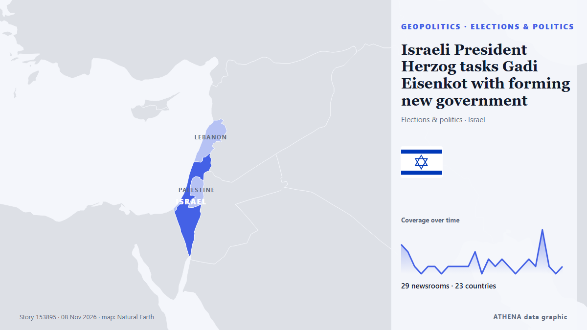

Israeli President Herzog tasks Gadi Eisenkot with forming new government

The president's decision comes after 67 lawmakers endorsed Eisenkot in a round of consultations held with party representatives after the October 27 election, compared with just 46 who endorsed… από Haaretz (English)
Αναφέρθηκε ανεξάρτητα από 33 μέσα σε 26 χώρες από τις 7 Νοε, πρώτο το Haaretz (English)· η κάλυψη εξασθενεί. Το ATHENA εκτιμά τον κίνδυνο μέτριο (2.4/10), κυρίως λόγω της σοβαρότητάς του και της εμβέλειάς του. Βεβαιότητα 92% (υψηλή): το επιβεβαιώνουν 33 ανεξάρτητα μέσα, μέση αξιοπιστία 75%. Μέσα ανά χώρα: Αζερμπαϊτζάν (4), Ισραήλ (3), Τουρκία (3). Κάλυψη: 7 Νοε έως 8 Νοε, 26 ώρες.
Γιατί έχει σημασία: Οι εξελίξεις στην ασφάλεια και τη διπλωματία μπορούν να μετατοπίσουν συμμαχίες, εμπόριο και αγορές πολύ πέρα από τις χώρες που εμπλέκονται.
Τι άλλαξε: 30 νέες αναφορές από 28 μέσα στο 24ωρο έως 8 Νοε.
Πρώτη διατύπωση: Yashar's Eisenkot to receive mandate to form new government, president announces
Οι τίτλοι των ειδήσεων παρουσιάζονται στα αγγλικά, όπως δημοσιεύτηκαν.
Πώς να διαβάσετε αυτή τη σελίδα
- Τι διαβάζετε
- 33 μέσα σε 26 χώρες ανέφεραν αυτό το γεγονός. Οι αναφορές παρακάτω εμφανίζονται με τη σειρά που δημοσιεύτηκαν· κάθε τίτλος ανοίγει το αρχικό άρθρο. Το ATHENA δεν γράφει δικά του ρεπορτάζ.
- Η εκτίμησή μας
- Για την καταγραφή — Οι αναφορές περιγράφουν ένα ολοκληρωμένο, εσωτερικό, εμπορικό ή προσωπικό ζήτημα. Το καταγράφουμε ώστε να βλέπετε ποιος το ανέφερε και πότε. Δεν παρακολουθούμε εδώ κίνδυνο ευρύτερης σύγκρουσης.
- Πόσα στοιχεία υπάρχουν
- Ισχυρή Πολλά ανεξάρτητα μέσα σε πολλές χώρες περιγράφουν το ίδιο γεγονός.
Αφού αφαιρεθούν οι επαναλήψεις, τα άσχετα και τα παλιά στοιχεία, υπολογίζονται 29 από τις 39 αναφορές που παρατίθενται· το 100% των τίτλων αντιστοιχεί στο γεγονός.
- Τι δεν σημαίνει
- Το ATHENA μετρά πώς καλύπτεται ένα γεγονός, όχι αν είναι αληθές. Δεν είναι πρόβλεψη, κρίση για το ποιος έχει δίκιο ή συμβουλή.
- Τι θα την άλλαζε
- Αναφορές από άλλα ανεξάρτητα μέσα που δείχνουν διαφορετική εξέλιξη, ή σαφής επιβεβαίωση ή διάψευση από επίσημη πηγή.
Εκτίμηση R2 · ανανεώνεται με κάθε ενημέρωση της σελίδας. Το ATHENA δεν έχει δημοσιεύσει ακόμη ιστορικό επιδόσεων για αυτές τις εκτιμήσεις· όταν το κάνει, θα συνδέεται εδώ.
Με μια ματιά
Επιλέγεται, βαθμολογείται και γράφεται από τη δημοσιευμένη μεθοδολογία του ATHENA. Κανένας συντάκτης δεν παρεμβαίνει σε μεμονωμένα γεγονότα. Πώς παράγεται ›
| 07 Nov 19:28 UTC | 4 |
|---|---|
| 07 Nov 20:28 UTC | 3 |
| 07 Nov 21:28 UTC | 1 |
| 07 Nov 22:28 UTC | 0 |
| 07 Nov 23:28 UTC | 1 |
| 08 Nov 00:28 UTC | 1 |
| 08 Nov 01:28 UTC | 0 |
| 08 Nov 02:28 UTC | 1 |
| 08 Nov 03:28 UTC | 1 |
| 08 Nov 04:28 UTC | 1 |
| 08 Nov 05:28 UTC | 1 |
| 08 Nov 06:28 UTC | 3 |
| 08 Nov 07:28 UTC | 0 |
| 08 Nov 08:28 UTC | 2 |
| 08 Nov 09:28 UTC | 1 |
| 08 Nov 10:28 UTC | 2 |
| 08 Nov 11:28 UTC | 1 |
| 08 Nov 12:28 UTC | 0 |
| 08 Nov 13:28 UTC | 1 |
| 08 Nov 14:28 UTC | 2 |
| 08 Nov 15:28 UTC | 1 |
| 08 Nov 16:28 UTC | 6 |
| 08 Nov 17:28 UTC | 1 |
| 08 Nov 18:28 UTC | 0 |
| 08 Nov 19:28 UTC | 4 |
| 08 Nov 20:28 UTC | 1 |
| 07 Nov 21:16 UTC | 0.0 |
|---|---|
| 07 Nov 23:11 UTC | 3.5 |
| 08 Nov 23:43 UTC | 2.4 |
Γιατί αυτοί οι αριθμοί
Σημασία
Κίνδυνος
Βεβαιότητα
Η κάλυψη — ποιος το ανέφερε και πότε
ο τίτλος όπως δημοσιεύτηκε · ανοίγει το πρωτότυπο- Haaretz (English) · ΙσραήλIsraeli president to task Gadi Eisenkot with forming governing coalition
- APA (English) · ΑζερμπαϊτζάνIsrael's Eisenkot sets conditions for forming unity government
- Anadolu Agency (English) · ΤουρκίαIsrael's president says will task Eisenkot with forming next government
- DW English · ΓερμανίαIsraeli president tasks Gadi Eisenkot with forming government
- Anadolu Agency (English) · ΤουρκίαIsrael’s Eisenkot calls for ‘national emergency gov't’ ahead of mandate
- Arab Times · ΚουβέιτEisenkot Calls for ‘National Emergency Government’ as Netanyahu Faces Political Setback
- APA (English) · ΑζερμπαϊτζάνIsraeli President announces he will task Eisenkot tomorrow with forming new government
- The Jerusalem Post · ΙσραήλYashar's Eisenkot to receive mandate to form new government, president announces
- Xinhua (English) — page reader · ΚίναIsraeli president to task Eisenkot with forming new gov't
- CGTN (World) · ΚίναHerzog taps Eisenkot to form next Israeli government
- Daily Mirror · Σρι ΛάνκαIsrael’s president tasks opposition leader Eisenkot with forming government
- Mainichi (English) · ΙαπωνίαIsrael's president taps opposition candidate Eisenkot to form a government, in setback for Netanyahu
- Times of India · ΙνδίαIs Netanyahu's time up? 10 things to know as rival Eisenkot gets shot at power
- The Business Standard (Bangladesh) (working feed) · ΜπανγκλαντέςCan Gadi Eisenkot break Israel's political deadlock?
- Nile Post · ΟυγκάνταIsrael's president tasks opposition leader Eisenkot with forming government
- Kurdistan24 (English) · ΙράκIsraeli President Tasks Eisenkot With Forming New Government
- Asharq Al-Awsat (English) · Σαουδική ΑραβίαIsrael’s President Gives Eisenkot the First Chance to Form the Next Government
- The Korea Times · Νότια ΚορέαIsrael's president taps opposition candidate Eisenkot to form government, in setback for Netanyahu
- The Rio Times · ΒραζιλίαIsrael Taps Eisenkot to Form a Government
- AzerNews · ΑζερμπαϊτζάνIsraeli President Isaac Herzog gives Eisenkot first chance to form new government
- Naharnet · ΛίβανοςWill Eisenkot withdraw Israeli army from south Lebanon?
- Africanews (English) · AFRDivided Israelis agree: Forming next government won't be easy
- Al Jazeera English · ΚατάρWill Eisenkot be able to form Israel’s next gov’t amid divided opposition?
- ProtoThema English ·Israel: Gabi Eisenkot officially tasked with forming new government
- New Straits Times · ΜαλαισίαEisenkot given tough task of forming Israeli government to replace Netanyahu
- Anadolu Agency (English) · ΤουρκίαIsraeli president tasks Eisenkot with forming new government
- Al-Monitor · Ηνωμένες ΠολιτείεςEisenkot given tough task of forming Israeli government over Netanyahu
- Al Jazeera English · ΚατάρIsraeli opposition leader warns of ‘point of no return’ for democracy
- Indian Express · ΙνδίαReceiving mandate to form Israel government, Eisenkot says task ‘requires creative and unconventional political moves’
- Haaretz (English) · ΙσραήλEisenkot eyes replacing Likud's Knesset speaker before forming government
- France 24 English · ΓαλλίαGadi Eisenkot receives mandate to form government
- Taipei Times · ΤαϊβάνIsrael president taps Eisenkot to form government
- RTÉ News · ΙρλανδίαEisenkot calls for Israeli national emergency government
- APA (English) · ΑζερμπαϊτζάνIsraeli President Herzog tasks Gadi Eisenkot with forming new government
- Stuff · Νέα ΖηλανδίαIsrael’s president gives Eisenkot the first chance to form the next government
- Middle East Eye · INTEisenkot says any party involved in next government must commit to action on Hamas
- TASS (English) · ΡωσίαIsraeli president awards mandate to form government to opposition party leader
- ABC News Australia · ΑυστραλίαEisenkot is trying to form government in Israel. Here are five ways it could go
- France 24 English · ΓαλλίαIsraeli opposition leader Eisenkot begins the hard work of forging a coalition government